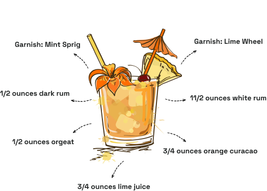

Ingredients
- Rum
- Orange Curacao
- Lime juice
- Orgeat (a nuanced almond syrup)
The Mai Tai is one of the most famous Tiki drinks in the world. Composed of rum, orange curaçao, fresh lime juice and orgeat (a nuanced almond syrup), it’s held sway over cocktail enthusiasts and Tiki aficionados for decades.